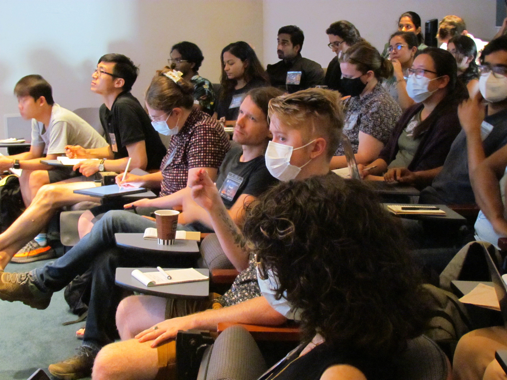

About Us
We have put together a mentorship program in which current and previous prize postdoctoral fellows in astronomy provide professional and academic advice and support to PhD students performing astronomy-related research, especially those who may not have the same level of access to the resources and connections that many NHFP, NSF, and 51 Pegasi b fellows have benefited from. We seek to improve the diversity of recipients of independent postdoctoral fellowships, which have traditionally served as key stepping stones for leadership positions in astronomy.
This program is independently organized by NHFP, NSF, and 51 Pegasi b fellows, and is not managed or sponsored by the NASA Hubble Fellowship Program, NSF Fellowship Programs, or the Heising-Simons Fellowship program. Participation in this program does not influence the NHFP application review process. Opinions expressed by individual fellows do not represent those of the NASA Hubble Fellowship Program, NSF Fellowship Programs, or the Heising-Simons Fellowship program.
Our Mission
To expand the pool of postdoctoral prize fellows by providing access to professional development opportunities.
Resources
We have made available a bank of past application material from successful astronomy prize fellows.
Resource Bank
Mentorship
We pair current and past fellows with senior graduate students in a year-long mentorship program.
Program Details
AMP-UP Camp
We organize a professional development and networking workshop to bring an in-person component to the program.
Find Out More
What we've been up to

AMP-UP Camp
In September 2023, we hosted the first AMP-UP Camp: an in-person workshop for all AMP-UP participants. The meeting was hosted by the Observatories of the Carnegie Institution for Science in Pasadena, Los Angeles, California, USA and generously funded by the Heising Simons Foundation.